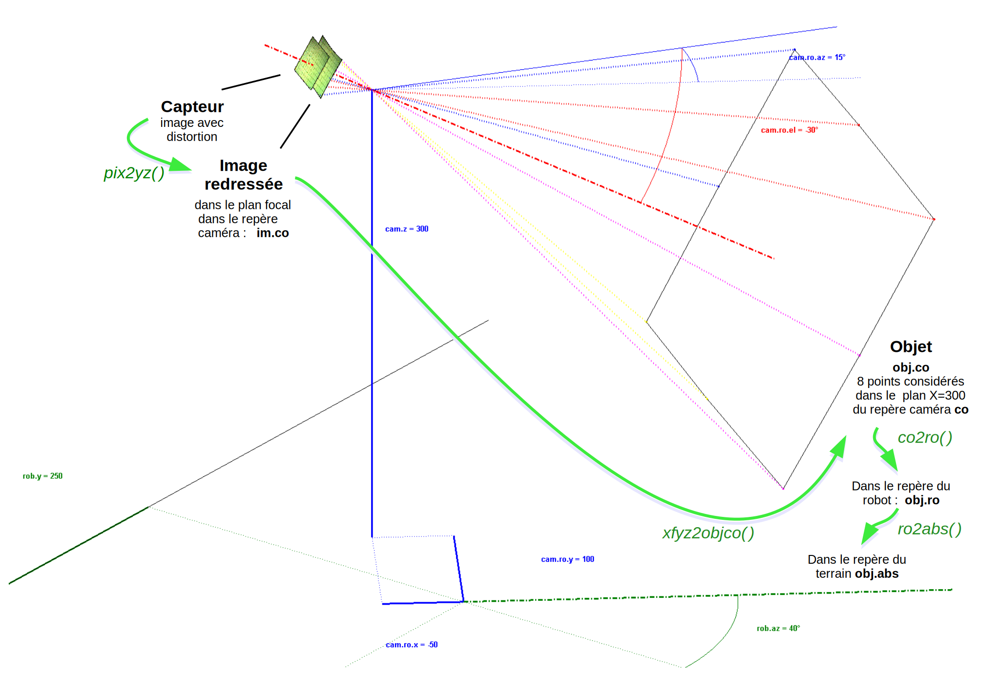
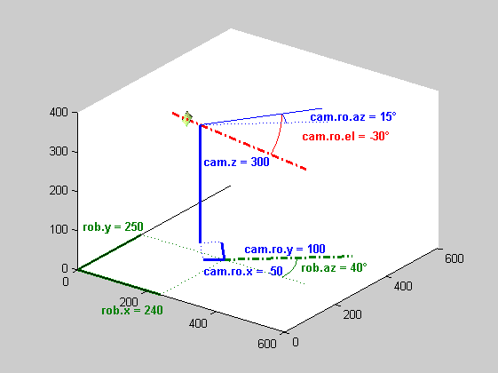

function positionfromcamera15()
Contents
- Introduction
- Initialisation des coordonnées de la caméra et du robot
- Dessin des axes principaux
- Dessin des coordonnées du robot
- Dessin des coordonnées de la caméra (sur le robot)
- dessin de l'image (donc jpeg retourné de 180°) corrigée en distortion dans le plan focal
- dessin de l'image (donc jpeg retourné de 180°) sur le capteur dans un plan légèrement arrière au plan focal de la caméra
- dessin de l'objet
- Conversion de coordonnées du repère caméra only vers celui du robot
- Conversion de coordonnées du repère du robot vers celui du terrain
Introduction
% Détection de position par caméra embarquée  % F. Gueuning, 2010-2015 Unité Electronique et informatique ECAM, Bruxelles % % SPc 150314: positioncamera3 + en 3d: dessin du capteur, de l'image corrigée en distortion (en plan focal) et objet % SPn 130211: création depuis positionfromcamera2, découpage en plusieurs fonctions % SPn 130210: corrections orthographiques % SPn 120323: distinction cr, ch, co plutot que ca + correction formule MAIS RESTE PROBLEME DE SOMME az ET SOMME el ! % SPn 120301: function avec pix, co, dis % SPn 120220: Dessin des systèmes d'axes et calcul de distorsion % SPn 110404: Premières réflexions % % Les fonctions suivantes sont successivement appelées : % imyz = pix2yz(trg, sens): Conversion des pixels en coordonnées de points images (en mm) dans le plan du capteur % et dans le repère de la caméra non redressé (co: camera only) % objco = xfyz2objco(f, imyz, ref): Conversion des points d'image en points d'objets dans le repère co (camera only) % Ceci nécessite des informations supplémentaires à choisir parmi les deux options suivantes : % - 4 points d'image dont les distances entre les points d'objet correspondants sont connues. % (voir "Finding 3D Positions from 2D Images Feasibility Analysis, H. G. Lochana Prematunga, ICONS 2012") % - l'appartenance des points d'objet à un plan connu % co2ro Conversion du repère co vers coordonnées dans le repère ro du robot % ro2abs Conversion du repère ro vers coordonnées dans le repère du terrain % % IN: pix structure des pixels à traiter % .r indices des lignes (rangées) % coord structure de coordonnées de robot et caméra % sens structure de caractéristiques du capteur % On a % - 4 systèmes de coordonnées : robot (ro), caméra redressée (ca), image (im), absolu () % - une cible (target, tar) ou une balise (beacon, bea) visibles sur une image % - les coordonnées x, y, z, r, az, el, ah % - indices de rangée (ir) et de colonne (ic) d'un point sur l'image % % Caméra : % cam.z Hauteur du centre de l'objectif de la caméra % cam.ro.x,.y Coordonnées du centre de l'objectif dans le système de coord du robot % .az Orientation azimutale (proche de 0 si la caméra regarde devant, donc suivant l'axe X % .el Orientation d'élévation (négatif car la caméra regarde vers le bas) % .ah Angle de l'horizon avec le bas de l'image, proche de 0° % Positif si l'horizon apparait plus haut à droite qu'à gauche sur l'image % Lors du calcul des coordonnées de cibles et balises exprimées dans le repère redressé de la % caméra (cr), on a neutralisé az, el et ah de la caméra. Le repère (cr) est donc % simplement une translation du repère (ro) valant cam.ro.x,.y,.z % Robot : % rob.x, .y coord absolues du robot % .az orientation azimutale du robot sur le terrain % % Cible (target) : % tar.im.ir indice de rangée du point d'image de la cible (target) % .ic colonne % .y, .z coord y et z du point au niveau de l'image après correction de distortion et % redressement compensant cam.ro.ah % .cr.az azimut de la cible dans le repère redressé de la caméra (donc orienté comme le robot) % .el élévation de la cible telle que perçue depuis le repère redressé de la caméra % .ro.r distance entre cible et origine du robot % .az azimut de la cible en coord du robot % .x coord de la cible dans un repère absolu (repère du terrain) % .y % .z % % Balise (beacon) : % bea... similaire à tar mais pour une balise (beacon) % on connait les coordonnées tar.x,.y,.z des balises % % - On suppose connus les 6 paramètres de position de la caméra dans le système de coord du robot : % cam.ro.x, .y, .z, .az, .el, .ah % - A partir des coordonnées d'un point tar.im.ir,.ic de l'image, on peut déduire les coord % correspondantes tar.cr.az,.el de la cible. % - D'abord calculer tar.im.y et tar.im.z (à exprimer en mm en supposant nulles au centre de l'image) % Pour la cmucam3, si on se réfère aux mesures de distorsion réalisées en 2010, extrait de polymais.m : % % distorsion en barillet dans le cas où on veut simuler le comportement de la caméra % % 521e-6 a été déterminé expérimentalement 100328 avec les étudiants de 4MEO: % % un carreau de 32 pixels au centre devient 27 pixels à 150 pixels du centre 100328 % % dérivée au centre: 32/32, à 150 pixels: 27/32 = 1-2*a*150 => a = 521e-6 % PImYZ = PIm(i).Y + j*PIm(i).Z; % PImYZ = abs(PImYZ).*(1-521e-6*abs(PImYZ)).*exp(j*angle(PImYZ)); % PIm(i).Y = real(PImYZ)*8.2/9; % le nombre d'unités en largeur est à diminuer car plus larges % Dans notre cas, ce sont les opérations inverses qu'il faut faire puisqu'on doit corriger une image % prise par la caméra % Exemple : im0 = imread('distorsion en barillet.jpg'); % Ajout d'un contour noir à l'image (utile uniquement ici pour son affichage, sinon à éviter) [r,c,p]=size(im0); bord=4; % pixels im1 = uint8(zeros(r+2*bord, c+2*bord, p)); im1(bord+1:end-bord, bord+1:end-bord, :) = im0; [r,c,p]=size(im1); XY = 2*ones(r+1,1)*(0:c)*9/8.2 + j*(0:r)'*ones(1,c+1); M=mean(mean(XY)); k=1; PImYZ{k} = XY; k=2; PImYZ{k} = M + abs(XY-M).*(1+521e-6*abs(XY-M)).*exp(j*angle(XY-M)); k=3; PImYZ{k} = M + abs(XY-M).*(1+50e-6*abs(XY-M).^1.5).*exp(j*angle(XY-M)); k=4; PImYZ{k} = M + abs(XY-M).*(1+700e-6*abs(XY-M)).*exp(j*angle(XY-M)); Tit = {'original' '521e-6 ' '50e-6 et \^1.5' ' 700e-6'}; Col = [0 0 0; 0 .5 0; 1 0 0; 0 0 1]; for k= []; %[1 4] figure plot([-50 450],[-50 350], '.k'), hold on hs = surf(real(PImYZ{k}), imag(PImYZ{k}), zeros(r+1,c+1), double(im1)/255, 'edgecolor','none'); hold off title(Tit{k}, 'Color', Col(k,:)) view(0,90) set(gca, 'DataAspectRatio', [1 1 1]) pause(.5) end % Ne pas oublier de neutraliser l'effet de cam.ro.ah % % - Puis tenir compte de cam.F (distance focale de la caméra) pour calculer tar.cr.az et tar.cr.el % tar.cr.az = atan(tar.im.y/cam.F)+cam.ro.az; % cam.F négatif RELATION INCORRECTE, SOMME VALABLE UNIQUEMENT SI AXE OPTIQUE HORIZONTAL % tar.cr.el = atan(tar.im.z/(cam.F/cos(tar.cr.az)))+cam.ro.el; % correction 120323 SOMME INCORRECTE % - Comment déduire tar.ro.r,.az à partir de tar.cr.az,.el et tar.z ? % Si cam.ro.x=0 et cam.ro.y=0 alors on a directement tar.ro.az=tar.cr.az % Sinon il faut par exemple que tar.cr.el soit non nulle pour déduire tar.ro.r,.az % ce qui nécessite que caméra et cible ne soient pas à la même hauteur : % tar.cr.r = (cam.z-tar.z)*tan(tar.cr.el) % Autre possibilité : se baser sur la taille de l'image de la cible (fonction de son éloignement). % - Comment déterminer l'orientation rob.az et la position rob.x,.y du robot sur le terrain ? % CECI EST EN GESTATION, IL FAUDRAIT VOIR DES IMAGES POUR SE FAIRE UNE IDEE % Pour une balise, si on peut déduire bea.ro.r,.az comme pour une cible, 2 balises suffisent pour % connaitre la position (ainsi que l'orientation) du robot, sinon il faut 3 balises. % On peut aussi se baser sur 2 images à des positions différentes et se contenter de 2 balises : si on % sait qu'on a avancé en ligne droite d'une distance D entre les 2 images, avec les 2 azimuts, on a une % information similaire à bea.ro.r,.az % Autre possibilité : tenir compte de l'orientation du bord du terrain sur l'image % Dessin des systèmes de coordonnées %------------------------------------
Initialisation des coordonnées de la caméra et du robot
cam.z = 300; % [mm] hauteur du centre de l'objectif de la caméra cam.ro.x = -50; cam.ro.y = 100; % [mm] coordonnées du centre de l'objectif dans le système de coord du robot cam.ro.az = 15; % [°] orientation azimutale (proche de 0 si la caméra regarde devant, donc suivant l'axe X cam.ro.el = -30; % [°] orientation d'élévation (négatif car la caméra regarde vers le bas) cam.ro.ah = 0; % [°] angle de l'horizon avec le bas de l'image, proche de 0 % positif si l'horizon apparait plus haut à droite qu'à gauche sur l'image rob.x = 240; rob.y = 250; % [mm] coord absolues du robot rob.az = 40; % [°] orientation azimutale du robot sur le terrain roxy = rob.x + j*rob.y; % robot
Dessin des axes principaux
figure plot3([0 0 0; 600 0 0], [0 0 0; 0 600 0], [0 0 0; 0 0 400], 'k'), set(gca, 'DataAspectRatio', [1 1 1]) view(-10.5, 26) view(36.5, 24) hold on

Dessin des coordonnées du robot
cosraz = cos(rob.az*pi/180); sinraz = sin(rob.az*pi/180); plot3([0 0; rob.x 0], [0 0; 0 rob.y], [0 0; 0 0], 'Color', [0 .5 0], 'linewidth', 2) % Lignes sur axes plot3(rob.x*[0 1; 2 1], rob.y*[1 0; 1 1], [0 0; 0 0], ':', 'Color', [0 .5 0]) % pointillés ... plot3(rob.x+[0; 300*cosraz], rob.y+[0; 300*sinraz], [0; 0], '-.', 'Color', [0 .5 0], 'linewidth', 2) % trait d'axe .-.-. text(rob.x, -110, 0, ['rob.x = ' num2str(rob.x)],'HorizontalAlignment', 'Center', 'Color', [0 .5 0], 'FontWeight', 'Bold') text(-80, rob.y, 0, ['rob.y = ' num2str(rob.y)],'HorizontalAlignment', 'Center', 'Color', [0 .5 0], 'FontWeight', 'Bold') plo = roxy + .7*rob.x*rot((0:abs(rob.az))*sign(rob.az)); % pour dessin d'angle rob.az plot3(real(plo), imag(plo), zeros(size(plo)), 'Color', [0 .5 0]) text(1.7*rob.x, 1.3*rob.y, 0, ['rob.az = ' num2str(rob.az) '°'], 'Color', [0 .5 0], 'FontWeight', 'Bold')

Dessin des coordonnées de la caméra (sur le robot)
camroxy = cam.ro.x + j*cam.ro.y; camxy = camroxy*rot(rob.az); plo = roxy + [0 0 camroxy; cam.ro.x j*cam.ro.y camroxy]*rot(rob.az); % Pour lignes sur axes plot3(real(plo), imag(plo), [0 0 0; 0 0 cam.z], 'Color', 'B', 'linewidth', 2) plo = roxy + [cam.ro.x j*cam.ro.y camroxy; camroxy+[0 0 300]]*rot(rob.az); % Pour pointillés ... plot3(real(plo), imag(plo), [0 0 cam.z; 0 0 cam.z], 'Color', 'B', 'LineStyle', ':') plo = roxy + camxy + [0; 300*rot(rob.az+cam.ro.az)]; % Pour trait d'axe .-.-. plot3(real(plo), imag(plo), ones(size(plo))*cam.z, 'Color', 'B', 'LineStyle', '-') plo = roxy -80j; % Pour texte cam.ro.x text(real(plo), imag(plo), 0, ['cam.ro.x = ' num2str(cam.ro.x)], 'Color', 'B', 'FontWeight', 'Bold') plo = roxy +80j; % Pour texte cam.ro.y text(real(plo), imag(plo), 0, ['cam.ro.y = ' num2str(cam.ro.y)], 'Color', 'B', 'FontWeight', 'Bold') plo = roxy+camxy + 10; % Pour texte cam.z text(real(plo), imag(plo), .7*cam.z, ['cam.z = ' num2str(cam.z)], 'Color', 'B', 'FontWeight', 'Bold') plo = roxy+camxy + 200*rot(rob.az+((0:abs(cam.ro.az))*sign(cam.ro.az))); % pour dessin d'angle cam.ro.az plot3(real(plo), imag(plo), ones(size(plo))*cam.z, 'Color', 'B') plo = roxy+camxy + 260*rot(rob.az+cam.ro.az/2); % pour texte cam.ro.az text(real(plo), imag(plo), cam.z, ['cam.ro.az = ' num2str(cam.ro.az) '°'], 'Color', 'B', 'FontWeight', 'Bold') plo = roxy + camxy + [-80; 300]*rot(rob.az+cam.ro.az)*cosd(cam.ro.el); % Pour trait d'axe optique .-.-. plot3(real(plo), imag(plo), cam.z+[-80; 300]*sind(cam.ro.el), 'Color', 'R', 'LineStyle', '-.', 'linewidth', 2) plo = roxy+camxy + 200*rot(rob.az+cam.ro.az)*cosd(0:abs(cam.ro.el)); % pour dessin d'angle cam.ro.el plot3(real(plo), imag(plo), cam.z+200*sind(0:abs(cam.ro.el))*sign(cam.ro.el), 'Color', 'R') plo = roxy+camxy + 260*rot(rob.az+cam.ro.az)*cosd(cam.ro.el/2); % pour texte cam.ro.el text(real(plo), imag(plo), cam.z+200*sind(cam.ro.el/2)-10, ['cam.ro.el = ' num2str(cam.ro.el) '°'], 'Color', 'R', 'FontWeight', 'Bold') nG = 18; % taille de grille surface: 18x18 Attention! semble produire des erreurs au-delà de 18 !? (surface ne donne plus des rectangles) surfgrid.ir = (1:(r-1)/(nG-1):r)'*ones(1,nG); % Grille nGxnG de surface, indices de rangées, valeurs extremes: [1;r] surfgrid.ic = ones(nG,1) * (1:(c-1)/(nG-1):c); % Grille nGxnG surface, indices de colonnes, valeurs extremes: [1 c] kLook = 10; % multiplieur pour le dessin du capteur pour qu'il soit plus loin du centre optique et plus grand

dessin de l'image (donc jpeg retourné de 180°) corrigée en distortion dans le plan focal
[imnodisto.co, sens] = pix2yz(surfgrid, 'cmucam3_half'); % grille qui portera la texture corrigée en distortion (repère caméra only) imnodisto.co.x = kLook * (-sens.F) * ones(size(imnodisto.co.y)); imnodisto.co.y = -kLook * imnodisto.co.y; imnodisto.co.z = -kLook * imnodisto.co.z; imnodisto.ro = co2ro(imnodisto.co, cam); % dans le repère du robot imnodisto.abs = ro2abs(imnodisto.ro, rob); % dans le repère du terrain hs = surface(imnodisto.abs.x, imnodisto.abs.y, imnodisto.abs.z ... ,'FaceColor','texturemap', 'cdata', double(im1)/255, 'edgecolor','none');
dessin de l'image (donc jpeg retourné de 180°) sur le capteur dans un plan légèrement arrière au plan focal de la caméra
sensk2null = sens; sensk2null.k2 = 0; % capteur cmucam3_full sans correction de distortion [im.co, sens] = pix2yz(surfgrid, sensk2null); % grille qui portera la texture d'image brute sur le capteur im.co.x = kLook * (-sens.F*1.2) * ones(size(im.co.y)); im.co.y = -kLook * im.co.y; im.co.z = -kLook * im.co.z; im.ro = co2ro(im.co, cam); % dans le repère du robot im.abs = ro2abs(im.ro, rob); % dans le repère du terrain hs = surface(im.abs.x, im.abs.y, im.abs.z ... ,'FaceColor','texturemap', 'cdata', double(im1)/255, 'edgecolor','none');

dessin de l'objet
objco = xfyz2objco(f, imyz, ref): Conversion des points d'image en points d'objets dans le repère co (camera only) Ceci nécessite des informations supplémentaires à choisir parmi les deux options suivantes : - 4 points d'image dont les distances entre les points d'objet correspondants sont connues. (voir "Finding 3D Positions from 2D Images Feasibility Analysis, H. G. Lochana Prematunga, ICONS 2012") - l'appartenance des points d'objet à un plan connu (dans le repère de la caméra) utilisé ici où on dessinera l'objet dans le plan X=300 perpendiculaire à la caméra, ABC=[1/300 0 0]
% Objet constitué de 8 points remarquables (contour coplanaire) de l'image 'distorsion en barillet.jpg' imobj.ic = [177.4; 175.0; 89.2; 15.4; 13.5; 17.0; 89.4; 174.3]; imobj.ir = [140.6; 16.0; 6.1; 12.5; 141.9; 268.8; 275.2; 265.6]; imobjyz = pix2yz(imobj, 'cmucam3_half'); imobj.co.x = kLook * (-sens.F) * ones(size(imobjyz.y)); imobj.co.y = -kLook * imobjyz.y; imobj.co.z = -kLook * imobjyz.z; imobj.ro = co2ro(imobj.co, cam); % dans le repère du robot imobj.abs = ro2abs(imobj.ro, rob); % dans le repère du terrain % Supposer l'objet dans le plan X=300 perpendiculaire à la caméra ABC = [-1/300 0 0]; % Equation du plan de l'objet: A*X + B*Y + C*Z + 1 = 0 obj.co = xfyz2objco(sens.F, imobjyz, ABC); obj.ro = co2ro(obj.co, cam); % dans le repère du robot obj.abs = ro2abs(obj.ro, rob); % dans le repère du terrain % Dessin de l'objet (8 points en principe d'un rectangle noir) plot3(obj.abs.x([1:end 1]), obj.abs.y([1:end 1]), obj.abs.z([1:end 1]), 'Color', 'K', 'linewidth', 1) Mgta = [1 0 1]; Red = [1 0 0]; Blue = [0 0 1]; Yell = [1 1 0]; set(gca, 'ColorOrder', [Mgta; Red; Red; Blue; Blue; Yell; Yell; Mgta]) plot3([obj.abs.x obj.abs.x]', [obj.abs.y obj.abs.y]', [obj.abs.z obj.abs.z]', '.', 'linewidth', 4) % Dessin des rayons depuis ces points jusqu'à l'image dans le plan focal (pointillé noir) plot3([obj.abs.x imobj.abs.x]', [obj.abs.y imobj.abs.y]', [obj.abs.z imobj.abs.z]', ':', 'linewidth', 2) function expangdeg = rot(angdeg) expangdeg = exp(j*angdeg*pi/180);
Error: Function definitions are not permitted at the prompt or in scripts.
Conversion de coordonnées du repère caméra only vers celui du robot
function objro = co2ro(objco, cam) % IN: objco structure de coordonnées de l'objet exprimé dans le repère de la caméra (caméra only) % .x,.y,.z [mm] matrices de coordonnées des points de l'objet % soit de memes dim, soit l'une ou l'autre scalaire % cam % .z [mm] hauteur du centre de l'objectif de la caméra % .ro dans le système de coord du robot % .x,.y [mm] coordonnées du centre de l'objectif % .az [°] orientation azimutale (proche de 0 si la caméra regarde devant, donc suivant l'axe X) % .el [°] orientation d'élévation (négatif car la caméra regarde vers le bas) % .ah [°] angle de l'horizon avec le bas de l'image, proche de 0 % positif si l'horizon apparait plus haut à droite qu'à gauche sur l'image % OUT: objro structure de coordonnées de l'objet exprimé dans le repère du robot % .x,.y,.z [mm] matrices de coordonnées des points de l'objet % de memes dim hommat1 = homrot_abc2ay0([0 cosd(cam.ro.ah) sind(cam.ro.ah)]); % Correction de ah: Rotation autour de l'axe X (A invariant) pour que A,B,C arrive dans le plan XY (Z=0) hommat2 = homrot_abc2xb0([cosd(-cam.ro.el) 0 sind(-cam.ro.el)]); % Correction de el: Rotation autour de l'axe Y (B invariant) pour que A,B,C arrive dans le plan XY (Z=0) hommat3 = homrot_abc2x0c([cosd(-cam.ro.az) sind(-cam.ro.az) 0]); % Correction de az: Rotation autour de l'axe Z (C invariant) pour que A,B,C arrive dans le plan XZ (Y=0) hommat4 = homtrans([0;0;0], [cam.ro.x, cam.ro.y, cam.z]); hommatall = hommat4*hommat3*hommat2*hommat1; % Matrice de transformation homogène pour passer du repère de la caméra vers celui du robot [r,c] = size(objco.x); if length(objco.y)>1 [r,c] = size(objco.y); elseif length(objco.z)>1 [r,c] = size(objco.z); end if max(r,c)>1 if length(objco.x)==1 objco.x = objco.x * ones(r,c); end if length(objco.y)==1 objco.y = objco.y * ones(r,c); end if length(objco.z)==1 objco.z = objco.z * ones(r,c); end end if r>1 objco.x = reshape(objco.x, 1, r*c); objco.y = reshape(objco.y, 1, r*c); objco.z = reshape(objco.z, 1, r*c); end xyzw = hommatall * [objco.x; objco.y; objco.z; ones(1,r*c)]; objro.x = reshape(xyzw(1,:), r, c); objro.y = reshape(xyzw(2,:), r, c); objro.z = reshape(xyzw(3,:), r, c);
Conversion de coordonnées du repère du robot vers celui du terrain
function objabs = ro2abs(objro, rob) % IN: objro structure de coordonnées de l'objet exprimé dans le repère du robot % .x,.y,.z [mm] matrices de coordonnées des points de l'objet % soit de memes dim, soit l'une ou l'autre scalaire % rob % .x,.y [mm] coordonnées du point de référence du robot dans le repère du terrain % .az [°] orientation azimutale du robot % OUT: objabs structure de coordonnées de l'objet exprimé dans le repère du terrain % .x,.y,.z [mm] matrices de coordonnées des points de l'objet % de memes dim hommat1 = homrot_abc2x0c([cosd(-rob.az) sind(-rob.az) 0]); % Correction de az: Rotation autour de l'axe Z (C invariant) pour que A,B,C arrive dans le plan XZ (Y=0) hommat2 = homtrans([0;0;0], [rob.x, rob.y, 0]); hommatall = hommat2*hommat1; % Matrice de transformation homogène pour passer du repère de la caméra vers celui du robot [r,c] = size(objro.x); if length(objro.y)>1 [r,c] = size(objro.y); elseif length(objro.z)>1 [r,c] = size(objro.z); end if max(r,c)>1 if length(objro.x)==1 objro.x = objro.x * ones(r,c); end if length(objro.y)==1 objro.y = objro.y * ones(r,c); end if length(objro.z)==1 objro.z = objro.z * ones(r,c); end end if r>1 objro.x = reshape(objro.x, 1, r*c); objro.y = reshape(objro.y, 1, r*c); objro.z = reshape(objro.z, 1, r*c); end xyzw = hommatall * [objro.x; objro.y; objro.z; ones(1,r*c)]; objabs.x = reshape(xyzw(1,:), r, c); objabs.y = reshape(xyzw(2,:), r, c); objabs.z = reshape(xyzw(3,:), r, c);